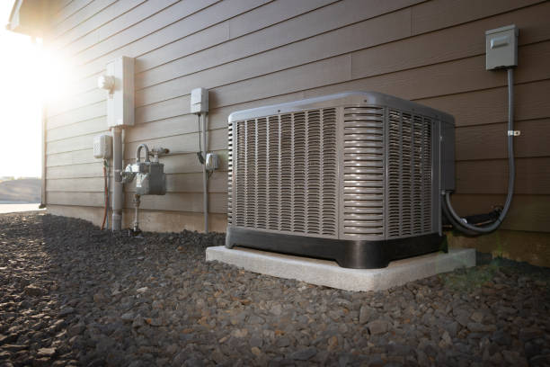

Expert HVAC Services for Downtown Williamson, WV Residents
Downtown Williamson, the vibrant heart of Mingo County and historic center of the Tug Valley, deserves top-quality HVAC services to keep residents and businesses comfortable year-round. Our comprehensive heating, ventilation, and air conditioning services cater specifically to the unique needs of Downtown Williamson properties, from historic buildings near the Tug River to modern homes and commercial buildings in the business district. As the Tug Valley's premier HVAC service provider, we understand the specific challenges that Downtown Williamson residents face, including the area's mountain climate, varying building ages and construction types, and the need for energy-efficient solutions that can handle both the humid summers and cold winters characteristic of West Virginia's mountain region.

Ductless Mini Split Installation in Downtown Williamson
Downtown Williamson's diverse housing stock, from historic buildings to modern homes, makes ductless mini split systems an ideal solution for efficient heating and cooling. Our ductless mini split installation services provide customized climate control without the need for extensive ductwork modifications.
Downtown Williamson residents choose ductless systems for their energy efficiency in older buildings, zone control for different areas of multi-level homes, quiet operation important in residential areas, minimal installation impact on historic properties, excellent air filtration for mountain air quality, and smart home integration capabilities popular with modern homeowners.
Our installation process includes comprehensive home assessment considering Downtown Williamson's unique architecture, customized system design for optimal coverage, professional installation by licensed technicians familiar with local building codes, thorough testing and commissioning, and complete customer training on system operation and maintenance.
Emergency HVAC Services for Downtown Williamson
When HVAC emergencies occur in Downtown Williamson, our 24/7 emergency service provides rapid response to restore comfort quickly. We understand that heating and cooling failures can be particularly disruptive in Downtown Williamson's dense residential environment.
Emergency situations include heating system failures during winter months, air conditioning breakdowns during hot summer weather, power outages affecting HVAC equipment, water damage to heating and cooling systems, gas leaks requiring immediate attention, and carbon monoxide detection issues requiring urgent resolution.
Our emergency response includes immediate phone consultation to assess the situation, rapid dispatch of certified technicians to Downtown Williamson locations, comprehensive diagnostic equipment for quick problem identification, fully stocked service vehicles for most common repairs, temporary heating or cooling solutions when needed, and coordination with local utility companies when necessary.
HVAC Repair Services Throughout Downtown Williamson
Downtown Williamson's mix of residential and commercial properties requires specialized HVAC repair expertise to address the unique challenges of different building types and system configurations. Our repair services cover all major HVAC brands and system types common in the area.
Common repair needs include aging equipment in older Downtown Williamson buildings, salt air corrosion affecting outdoor units near the riverside, electrical issues related to older building wiring, ductwork problems in converted buildings, thermostat and control system updates, refrigerant leaks in air conditioning systems, and heating system efficiency problems.
Our repair process begins with thorough system diagnosis using advanced testing equipment, detailed explanation of problems and repair options, upfront pricing with no hidden fees, quality repairs using genuine parts, comprehensive testing to ensure proper operation, and follow-up service to confirm customer satisfaction.
Air Conditioning Installation and Repair in Downtown Williamson
Downtown Williamson's riverside location can create unique cooling challenges, from high humidity levels to varying sun exposure depending on building orientation. Our air conditioning services address these specific environmental factors.
Cooling considerations for Downtown Williamson include humidity control for riverside properties, energy-efficient systems to manage summer cooling costs, quiet operation for close-proximity neighbors, corrosion-resistant equipment for salt air exposure, zoned cooling for multi-level homes, and smart thermostats for optimal efficiency and convenience.
Installation services include load calculation analysis considering Downtown Williamson's climate factors, equipment selection optimized for local conditions, professional installation following manufacturer specifications, complete system testing and commissioning, customer education on optimal operation, and ongoing maintenance program enrollment for continued efficiency.
Heating System Services for Downtown Williamson Homes
Downtown Williamson's winter heating needs require reliable, efficient systems that can handle temperature fluctuations and provide consistent comfort throughout the heating season. Our heating services ensure optimal warmth and efficiency.
Heating solutions include high-efficiency furnace installation and repair, boiler services for older Downtown Williamson buildings, heat pump systems for year-round efficiency, radiant heating solutions for specific applications, hybrid heating systems combining multiple technologies, and smart heating controls for optimal comfort and efficiency.
Our heating services encompass comprehensive system evaluation and recommendations, professional installation by certified technicians, regular maintenance to prevent breakdowns, emergency repair services during cold weather, efficiency upgrades to reduce heating costs, and indoor air quality improvements integrated with heating systems.
Commercial HVAC Services in Downtown Williamson
Downtown Williamson's bustling business district, including restaurants, offices, retail spaces, and riverside commercial properties, requires specialized commercial HVAC services to maintain comfortable environments for customers and employees.
Commercial applications include restaurant kitchen ventilation and climate control, office building HVAC systems, retail space climate control, riverside business environmental considerations, multi-tenant building HVAC management, and energy management systems for cost control.
Our commercial services include system design and installation for new construction, retrofits and upgrades for existing buildings, preventive maintenance programs, emergency repair services, energy efficiency audits, and ongoing system optimization for operational cost management.
Indoor Air Quality Solutions for Downtown Williamson
Downtown Williamson's riverside location and mountain town environment can present unique air quality challenges. Our indoor air quality services help residents and businesses maintain healthy, comfortable indoor environments.
Air quality considerations include humidity control for riverside properties, air filtration for urban pollutants, ventilation solutions for older buildings, allergen control systems, odor management for proximity to valley activities, and fresh air integration with existing HVAC systems.
Solutions include whole-home air purification systems, high-efficiency filtration upgrades, humidity control systems, UV light air purification, energy recovery ventilation, and smart air quality monitoring with automated adjustments.
HVAC Maintenance Programs in Downtown Williamson
Regular maintenance is essential for HVAC system longevity and efficiency, particularly in Downtown Williamson's challenging environment. Our maintenance programs provide comprehensive care to prevent problems and optimize performance.
Maintenance benefits include extended equipment life in salt air environment, improved energy efficiency year-round, reduced likelihood of emergency breakdowns, better indoor air quality, priority scheduling for service calls, and potential warranty protection for covered equipment.
Our maintenance services include seasonal system inspections and tune-ups, filter replacement and system cleaning, refrigerant level checks and adjustments, electrical connection inspection, ductwork inspection and cleaning when needed, thermostat calibration and programming, and detailed performance reports with recommendations.
Heat Pump Services for Downtown Williamson Efficiency
Heat pumps offer excellent efficiency for Downtown Williamson's moderate climate, providing both heating and cooling from a single system. Our heat pump services help residents maximize energy savings while maintaining consistent comfort.
Heat pump advantages include year-round efficiency for heating and cooling, reduced energy costs compared to traditional systems, environmental benefits through reduced carbon footprint, quiet operation important in residential areas, and advanced features like variable-speed technology and smart controls.
Services include heat pump installation and sizing, repair services for all heat pump types, maintenance programs for optimal efficiency, retrofits and upgrades for existing systems, and integration with existing ductwork or ductless applications.
Ductwork Services for Downtown Williamson Properties
Many Downtown Williamson buildings have unique ductwork challenges due to building age, renovation history, and space constraints. Our ductwork services ensure optimal airflow and system efficiency.
Ductwork considerations include space constraints in older buildings, insulation upgrades for energy efficiency, sealing improvements to prevent energy loss, cleaning services for improved air quality, modifications for HVAC system upgrades, and zone damper installation for comfort control.
Our ductwork services encompass comprehensive ductwork inspection and assessment, professional cleaning and sanitization, sealing and insulation improvements, modifications and extensions for system upgrades, and ongoing maintenance to ensure continued performance.

Energy Efficiency Solutions for Downtown Williamson
Downtown Williamson residents are increasingly focused on energy efficiency to reduce utility costs and environmental impact. Our energy efficiency solutions help achieve both goals while maintaining optimal comfort.
Efficiency improvements include high-efficiency HVAC equipment installation, smart thermostat integration, insulation and air sealing recommendations, energy recovery ventilation systems, solar-ready HVAC designs, and energy management systems for ongoing optimization.
Our efficiency services include comprehensive energy audits, equipment upgrade recommendations, rebate and incentive assistance, financing options for energy improvements, and ongoing monitoring to ensure continued efficiency performance.
Smart Home HVAC Integration in Downtown Williamson
Downtown Williamson's tech-savvy residents appreciate smart home integration for their HVAC systems. Our smart technology solutions provide enhanced convenience, efficiency, and control over home comfort systems.
Smart features include WiFi-enabled thermostats for remote control, smartphone app integration, voice control compatibility, automated scheduling and setbacks, energy usage monitoring and reporting, integration with home automation systems, and predictive maintenance alerts.
Integration services include smart thermostat installation and programming, system integration with existing home automation, training on smart features and capabilities, ongoing support for technology updates, and troubleshooting assistance for smart system issues.
Financing and Payment Options for Downtown Williamson Residents
We understand that HVAC investments can be significant, so we offer various financing and payment options to make quality HVAC services accessible to all Downtown Williamson residents.
Payment options include flexible financing plans with competitive rates, seasonal payment programs, energy efficiency rebate assistance, manufacturer promotional financing, service plan payment options, and emergency repair payment plans for unexpected expenses.
Our financing team helps identify available rebates and incentives, explains financing options and terms, assists with application processes, coordinates with utility rebate programs, and provides clear payment schedules and options.
Local Expertise and Community Involvement
As a locally-focused HVAC service provider, we understand Downtown Williamson's unique characteristics and are committed to serving the community with expertise, reliability, and integrity.
Local advantages include familiarity with Downtown Williamson building types and challenges, relationships with local suppliers and contractors, understanding of local codes and regulations, knowledge of neighborhood characteristics and needs, rapid response times for service calls, and commitment to community satisfaction and reputation.
Community involvement includes participation in local business organizations, support for Downtown Williamson community events, environmental responsibility in service practices, ongoing education and training for staff, and dedication to customer satisfaction and community reputation.
Seasonal HVAC Considerations for Downtown Williamson
Downtown Williamson's seasonal climate variations require specific HVAC considerations throughout the year. Our seasonal service recommendations help ensure optimal performance and efficiency regardless of weather conditions.
Seasonal services include spring air conditioning preparation and system startup, summer efficiency optimization and maintenance, fall heating system preparation and testing, winter emergency service availability, year-round system monitoring and adjustments, and seasonal energy efficiency recommendations.
Our seasonal approach includes proactive maintenance scheduling, weather-appropriate system adjustments, emergency preparedness for extreme weather, energy efficiency optimization for each season, and ongoing customer education about seasonal HVAC best practices.

Customer Service and Satisfaction
Our commitment to customer satisfaction drives everything we do in Downtown Williamson. From initial consultation through ongoing service, we prioritize clear communication, quality workmanship, and customer education.
Service standards include prompt response to service requests, clear communication about services and pricing, quality workmanship backed by warranties, ongoing customer education and support, follow-up service to ensure satisfaction, and commitment to resolving any concerns promptly and professionally.
Customer benefits include transparent pricing with no hidden fees, guaranteed workmanship and service quality, ongoing support and maintenance options, priority scheduling for existing customers, and peace of mind knowing experienced professionals are handling HVAC needs.
Contact Information and Service Scheduling
Ready to experience the best HVAC services in Downtown Williamson? Contact our team today to schedule consultation, service, or emergency repair. Our experienced technicians are ready to help with all your heating, cooling, and indoor air quality needs.
We serve all areas of Downtown Williamson including the riverside district, residential neighborhoods near Silver Lake, commercial areas around the Williamson, WV town center, and historic districts throughout the community. Our local knowledge and expertise ensure the best possible service for your specific location and needs.
For immediate service or to schedule an appointment, call us at (888) 918-9104. Our friendly customer service team is ready to answer questions, schedule services, and provide information about our comprehensive HVAC solutions for Downtown Williamson residents and businesses.
Why Choose Our Downtown Williamson HVAC Services
When you choose our HVAC services for your Downtown Williamson property, you're choosing a team dedicated to excellence, reliability, and customer satisfaction. Our combination of technical expertise, local knowledge, and commitment to quality sets us apart.
Service advantages include licensed and insured technicians, comprehensive HVAC services under one roof, emergency service availability 24/7, transparent pricing and clear communication, quality workmanship backed by warranties, local expertise in Downtown Williamson properties, and ongoing customer support and education.
We're proud to serve the Downtown Williamson community and look forward to providing the reliable, efficient HVAC services you need to stay comfortable year-round. Contact us today to experience the difference professional, local HVAC service makes for your Downtown Williamson property.